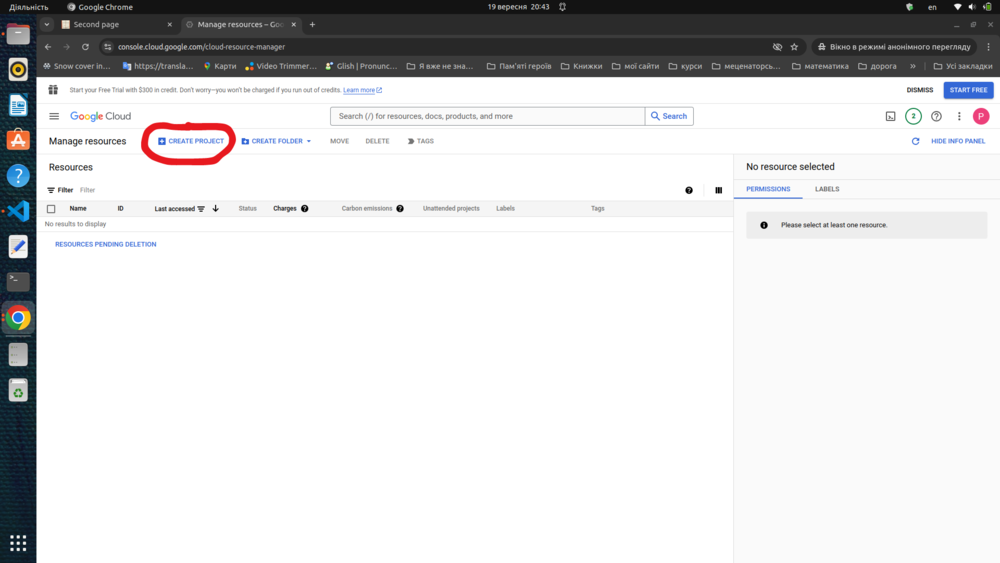
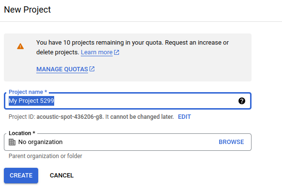
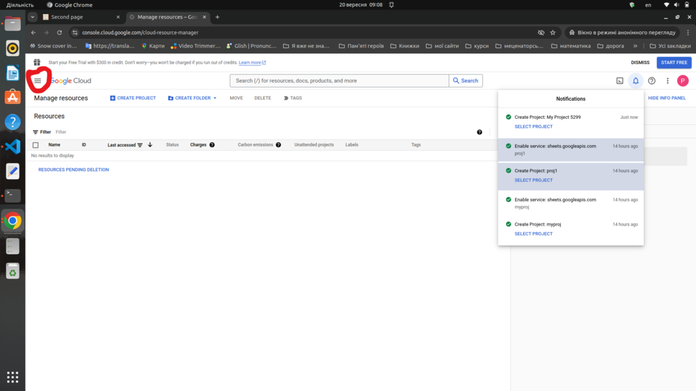
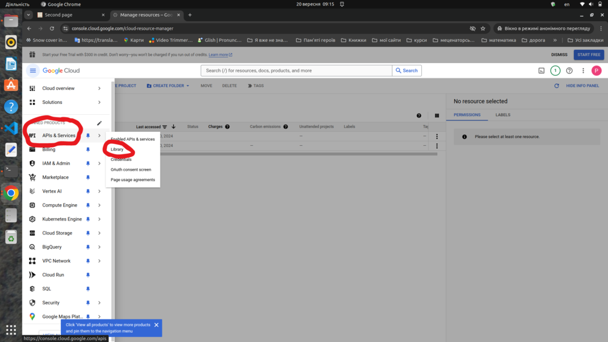

The Google documentation for developers provides many examples of interacting
with Google Sheets using different programming languages such as Python, Ruby, Java, etc.
But in this tutorial, I want to highlight the basic API, which you can use with CURL CLI, Postman, or any other REST client.
!Important notice!
The Google Sheets API avaliable only for spreadsheets with public read/write permission (everybody who has the link can edit sheet).
So, let's start with a basic HTTP GET request which returns a simple JSON object with information about the spreadsheet title, ID, time zone, default format, etc.
First of all, you need to create a new project on the Google Cloud console. For this purpose go to
the Manage Resources tab and click the CREATE PROJECT button.



